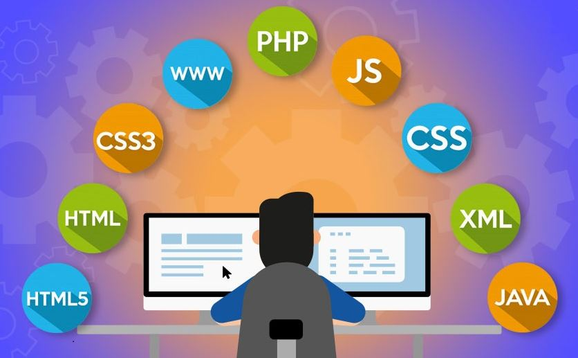

|
Web application development
Focusing on our clients’ needs, we understand that sometimes an off the shelf solution may not fit your business, process needs and business demand. With years of experience in working with many different sectors, our teams are well equipped to develop and implement custom software that aligns not only with your business processes to achieve your business goals.
We provide complete lifecycle of software development services, including system analysis and use case development, prototyping, system architecture & design, system integration, native, web and API development, UI/UX design, database design and administration, functional and system testing, quality assurance and project management according to CMMI standard.
|
Focus areas
|
-
Any customized web applications
-
Enterprise Resource Planning (ERP) and Enterprise Business Systems
-
E-Governance and Public/Citizen Services Portals
-
B2B or B2C E-Commerce portals and Payment system
-
Knowledge / Content Management System (KMS/CMS)
-
Business Intelligence
|
Technology we use in web development

|